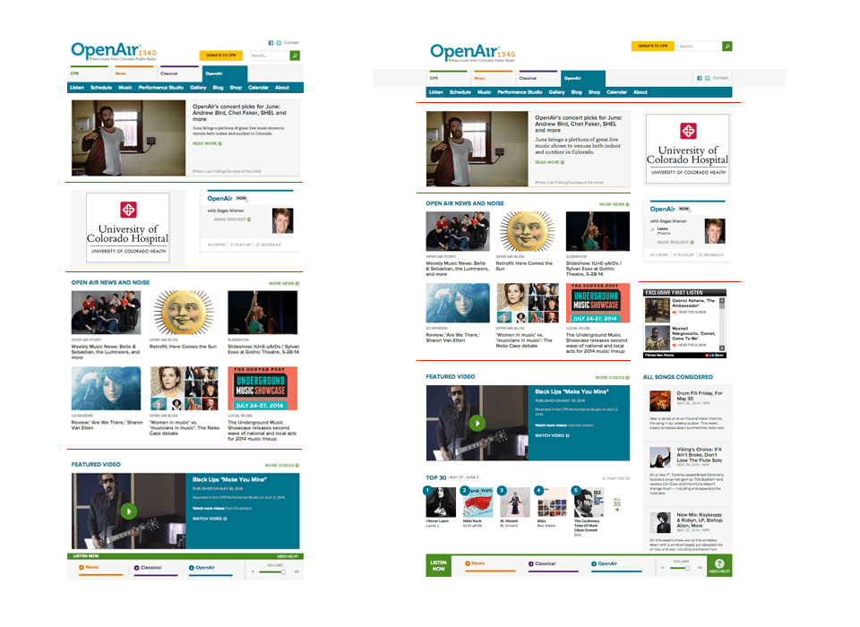
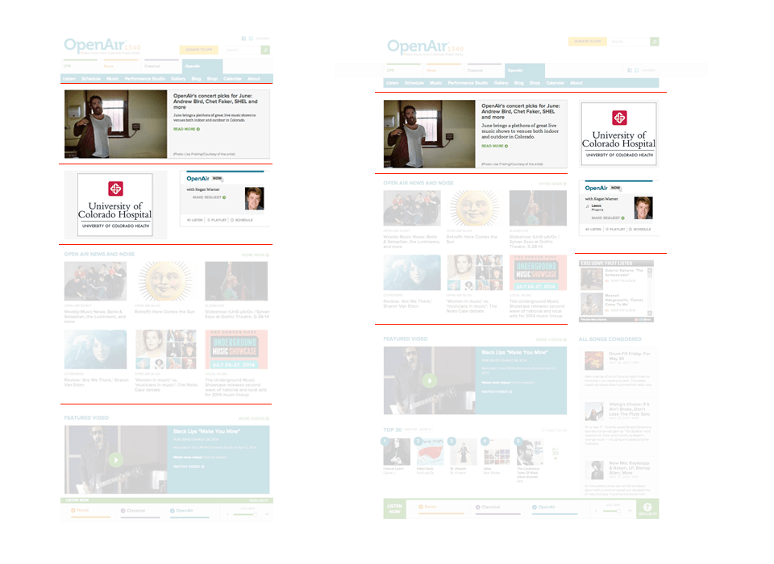

Give an element a defined width to prevent it from expanding too wide.
The essence of this process is very fundamental indeed. We may understand it best by comparing the work of a fifty-year-old carpenter with the work of a novice. The experienced carpenter keeps going. He doesn't have to keep stopping, because every action he performs, is calculated in such a way that some later action can put it right to the extent that it is imperfect now. What is critical here, is the sequence of events. The carpenter never takes a step which he cannot correct later; so he can keep working, confidently, steadily.
The novice by comparison, spends a great deal of his time trying to figure out what to do. He does this essentially because he knows that an action he takes now may cause unretractable problems a little further down the line; and if he is not careful, he will find himself with a joint that requires the shortening of some crucial member – at a stage when it is too late to shorten that member. The fear of these kinds of mistakes forces him to spend hours trying to figure ahead: and it forces him to work as far as possible to exact drawings because they will guarantee that he avoids these kinds of mistakes.
.l--constrained
Rows of Relevant Content
Divide the screen into rows of relevant content such that the hierarchy and content relationships are preserved across different screen sizes.


Layout Modifiers
Follow a naming convention for classes intended to modify layout.
Layout Naming Convention
...
...
...
.l--3-column {
> .l-primary { @include span(4 at 1); }
> .l-secondary { @include span(4 at 5); }
> .l-tertiary { @include span(4 at 9); }
}
.l--sidebars-after {
> .l-primary { @include span(6 at 1); }
> .l-secondary { @include span(3 at 7); }
> .l-tertiary { @include span(3 at 10); }
}
.l--sidebars-before {
> .l-primary { @include span(6 at 7); }
> .l-secondary { @include span(3 at 1); }
> .l-tertiary { @include span(3 at 4); }
}
.l--triptych {
> .l-primary { @include span(6 at 4); }
> .l-secondary { @include span(3 at 1); }
> .l-tertiary { @include span(3 at 10); }
}
Position an item by pulling it into the gutter established by its parent container.
The essence of this process is very fundamental indeed. We may understand it best by comparing the work of a fifty-year-old carpenter with the work of a novice. The experienced carpenter keeps going. He doesn't have to keep stopping, because every action he performs, is calculated in such a way that some later action can put it right to the extent that it is imperfect now. What is critical here, is the sequence of events. The carpenter never takes a step which he cannot correct later; so he can keep working, confidently, steadily.
Drawings help people to work out intricate relationships between parts.
Christopher Alexander
The novice by comparison, spends a great deal of his time trying to figure out what to do. He does this essentially because he knows that an action he takes now may cause unretractable problems a little further down the line; and if he is not careful, he will find himself with a joint that requires the shortening of some crucial member – at a stage when it is too late to shorten that member. The fear of these kinds of mistakes forces him to spend hours trying to figure ahead: and it forces him to work as far as possible to exact drawings because they will guarantee that he avoids these kinds of mistakes.
A Pattern Language
by Christopher Alexander, Sara Ishikawa, Murray Silverstein and Max Jacobson (1977)
At the core of these books is the idea that people should design for themselves their own houses, streets, and communities. This idea may be radical (it implies a radical transformation of the architectural profession) but it comes simply from the observation that most of the wonderful places of the world were not made by architects but by the people.
Everyone is aware that most of the built environment today lacks a natural order, an order which presents itself very strongly in places that were built centuries ago.
In short, no pattern is an isolated entity. Each pattern can exist in the world only to the extent that is supported by other patterns: the larger patterns in which it is embedded, the patterns of the same size that surround it, and the smaller patterns which are embedded in it.
The more living patterns there are in a place - a room, a building, or a town - the more it comes to life as an entirety, the more it glows, the more it has that self-maintaining fire which is the quality without a name.
When the aspect ratio of an element is known, but the target size is not, use padding and absolute positioning to preserve the aspect ratio of an element.